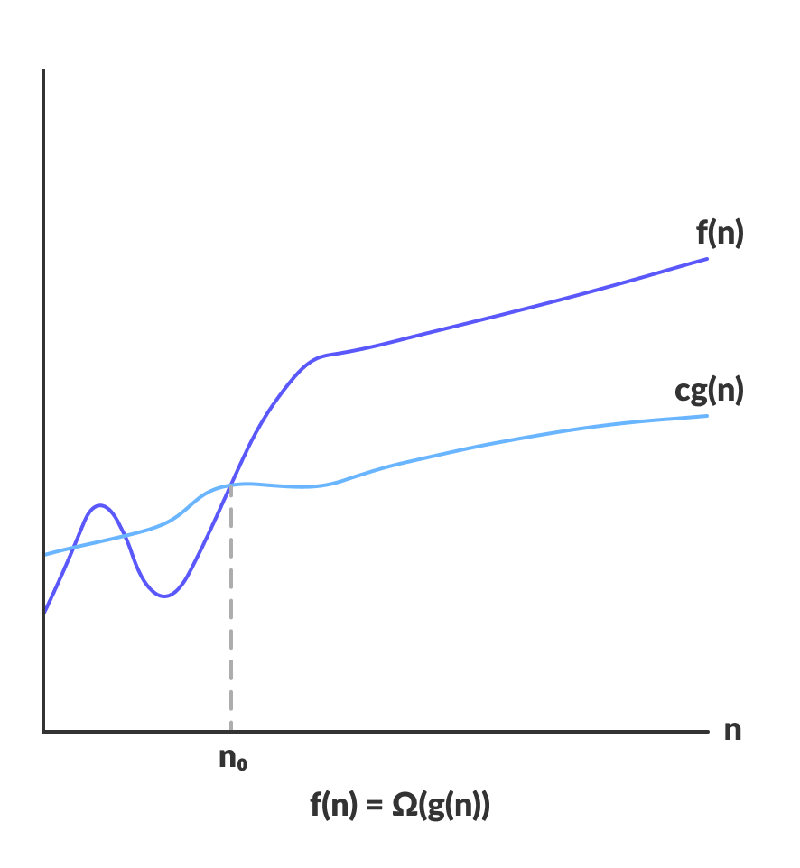

CSL 102; Data Structures; IIIT Nagpur; Created by: Dr. Aniket Pingley
In general, many ways could exist to solve a problem . We tend to choose the best of all options available. For example, mutliple ways to reach a destination may exist, but navigation applications will provide the best route either in terms of distance or time. To find the best option, a mechanism for comparitive analysis must be available to evaluate the available options. Similarly, in computer science we must learn to compare the performance of different algorithms and choose the best one to solve a particular problem.
The field of computer science uses two mechanisms for comparison:
It will be thus natural to think of time complexity in terms of milliseconds/seconds etc. and space complexity it terms of kb/mb etc. However, measuring the performance of algorithms in the aforesaid terms has a fundamental pitfall. One can argue that with the use of better hardware the performance of an algorithm can improve, which is true to some extent. However, multiple software applications share the hardware for their execution. Thus, the performance of even the best algorithm for a given problem might get limited due to other applications. In addition, the input size for an algorithm could be very large and could become exponentially larger as more data becomes available. In contrast, increasing the hardware capacity to according to the size of input data is limited by the cost of hardware that could become prohibitively expensive.
Thus, the performance of algorithm, i.e. time and space complexity, is expressed in terms of the input size. In addition, we are interested in understanding how the performance of the algorithm changes as the input size grows. To this end, time and space complexity represent asymptotic behavior of an algorithm, i.e. the limiting behavior of algorithm in context of the input size.
Mathematically speaking, an algorithm can be expressed as a function of input size. For example, to read an array of N elements, a for loop performs N iterations. Thus a for loop can be expressed as f(N), where f(N) = N. Likewise sorting algorithms like bubble, selection and insertion that have nested for loops will be expressed as f(N), where f(N) = N2. One may argue that additional computation is needed in assigning values to variable and that must be taken into account. As an illustration, if an algorithm is expressed as f(N) = N3 + 10N + 5, then as N becomes very large, the term 10N + 5 becomes insignificant compared to N3. The function f(N) is said to be asymptotically equivalent to N3, as N → ∞. Thus expressing f(N) ~ N3 suffices to explain the order of growth of an algorithm with respect to the input size N.
Notations
(Some parts in this section are borrowed from https://www.hackerearth.com/)
As stated above, we are interested in the order of growth of time and space in context of the input size. In other words, we are interested in the more significant parts of the algorithms where time and space gets consumed. If an algorithm is expressed in terms of mathematical functions, the terms having higher orders are more significant and thus of our interest. Thus, complexity is expressed in terms of (asymptotic) upper and lower bounds. Following notations will make it clear.
O-notation or the Big O notation:
Big O notation is used to denote asymptotic upper bound. For a given function g(n), we denote by O(g(n)) the set of functions:
O(g(n)) = { f(n) : there exist positive constants c and n0 such that 0 ≤ f (n) ≤ c * g(n) for all n ≥ n0 }
Ω-notation or Big Omega notation:
Ω-notation is used to denote asymptotic lower bound. For a given function g(n), we denote by Ω(g(n)) the set of functions:
Ω(g(n)) = { f(n) : there exist positive constants c and n0 such that 0 ≤ c * g(n) ≤ f(n) for all n ≥ n0 }
Θ-notation or Big Theta notation:
Θ-notation is to denote asymptotic tight bound. For a given function g(n), we denote by Θ(g(n)) the set of functions:
Θ(g(n)) = { f(n) : there exist positive constants c1, c2 and n0 such that 0 ≤ c1 * g(n) ≤ f (n) ≤ c2 * g(n) for all n > n0 }
Comparison of three notations:
Source: https://www.programiz.com/
Space Complexity
Much of the focus of discussion about algorithmic complexity revolves around time complexity. Space complexity amount of memory space required by an algorithm in its execution cycle. Space needed by an algorithm is equal to the sum of the following two components:
As you might have guessed by now, we are interested in the variable part of the data space consumption. The variable space is of two types:
Space complexity usually expressed using big O-notation.